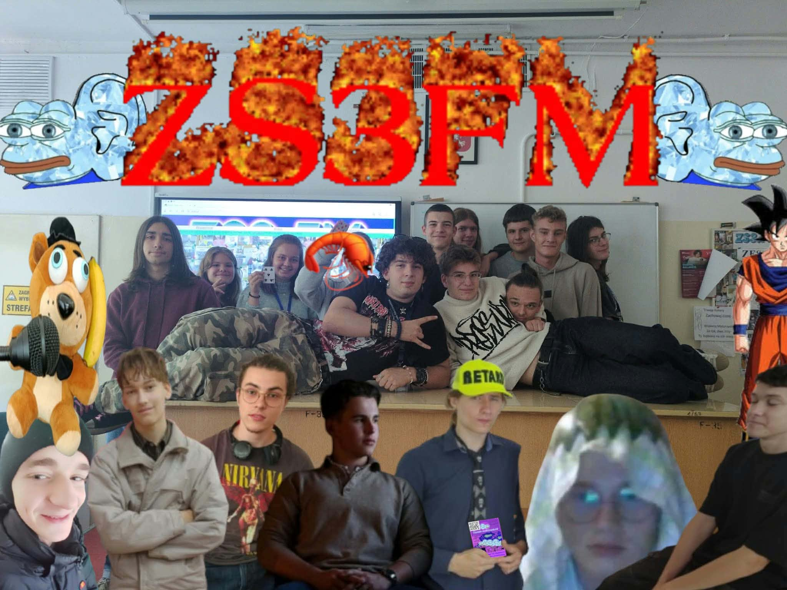
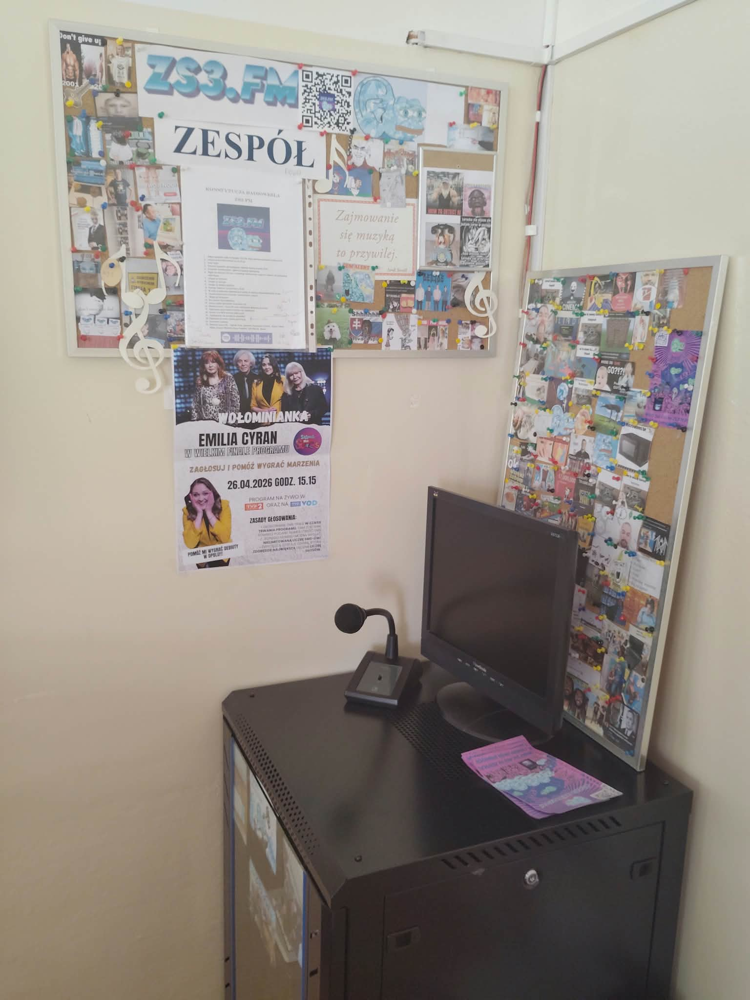

Oto nasz szkolny zespół radiowęzłowy. To my każdego dnia w szkole puszczamy dla was tylko najlepszą muzykę aby umilić wam szkolne dni :)

Ponad 10 osób zarządza codziennie naszą amatorkską szkolną stacją radiową.
Postanowiliśmy więc również dać Wam głos na temat tego co chcielibyście ewentualnie
usłyszeć chillując na długich przerwach, tak też powstała ta strona pozwalająca
dawać ile tylko dusza zapragnie propozycji które zasilą naszą stale zwiększającą
rozmiary playlistę radiową. A oto spis aktualnych i niektórych przeszłych członków
stale rosnącego mocarstwa radia:
- Zagrab - Administrator strony zs3fm.pl, spec od technicznych aspektów radia i game designer.
- Spawacz - Naczelny redaktor ZS3.FM, główny projektant plakatów, pionier rewolucji radiowęzłowej, perkusista formacji Cherry Gun.
- Enex - Kierownik wieczorów serialowych, zagorzały clopper i posiadacz wielu rzadkich ryb.
- Johnny - Fan nr. 1 Kaniejusza, doradca marketingowy, poszukiwany przez Mossad, kandydat szkolnych wyborów na przewodniczącego 2025.
- Rojek - Legendarny akordeonista, youtuber, streamer, złota rączka, informatyk, elektryk, wędkarz i miłośnik anime. Jest człowiekiem wielu imion.
- Ziemek - Spec od inspiracji do plakatów oraz współtwórca tejże strony.
- Creatria - Naczelna artystka grafik, koszulek i swojej prywatnej sztuki, nr 1. Gamerka boblox.
- Kasztanka - Wirtuozka kart, ta od Californii.
- Olifka - Fanka Sabriny Stolarzowej, specjalistka ds. mediów.
- Koza - Przewodniczący naszego przytułku, specjalista dźwiękowiec i ten który zapoczątkował reformy agrarne szkoły, fan nr. 2 Kaniejusza.
- Pioter - Profesjonalny gracz Desmos, nie ma osiągnieć w tej szkole.
- Szoku - Przedstawiciel Fujimoto społeczności, znany również jako Gaba "take your clothes off" goo.
- Mati - Grzeczny chłopak co dzień dobry na klatce mówi.
- Prent - Kulturysta i zawodnik WWE, w wolnych chwilach przenosi góry.
- Bieniek - Fanatyk Grungu, naczelny agitant.
- Tutel - Naczelny chill guy, klawiszowiec formacji Red Marble.
- Marcinek - Entuzjasta KULTowej muzyki.
- Mikołaj Kurt - Leniuch i day trader.
- Ludwik - Piłkarzyk Bobra Tłuszcz.
- Kwadrat (Emerytowany) - Dawny agitant poszukiwany listem gończym PZW.
Codziennie staramy się wybrać coś dla każdego,
żeby każdy miał szansę usłyszeć ulubiony gatunek lub twórcę.
Na ten moment podpięte pod radiowęzeł są wszystkie piętra szkoły
+ stołówka oraz okolice hali, wyciszona jest jedynie piwnica z
powodu potrzeby zachowania ciszy dla biblioteki, można oczywiście
i tak usłyszeć tam komunikaty gdy jest na nie potrzeba.

Z góry dziękujemy za propozycje i przyjmujemy też słowa krytyki lub pochwały, czy też ewentualne pytania.
Pan Redaktor